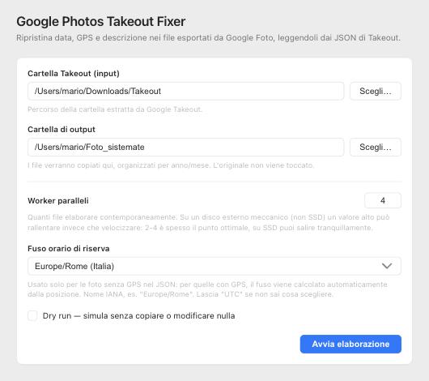
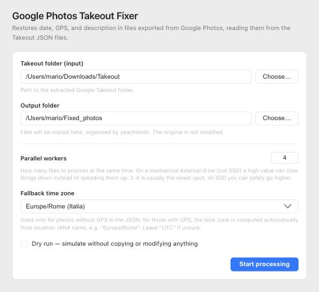

Portfolio
Takeout Fixer
IT
EN
v1.2.6
$
sudo
apt
install
./google-photos-takeout-fixer
*
.deb
GitHub


01
02
03
04
05
06
07
08
01
02
03
JPG
JPEG
PNG
HEIC
MP4
MOV
GIF
CHANGELOG
v1.2.6
v1.2.5
v1.2.4
v1.2.3
FAQ